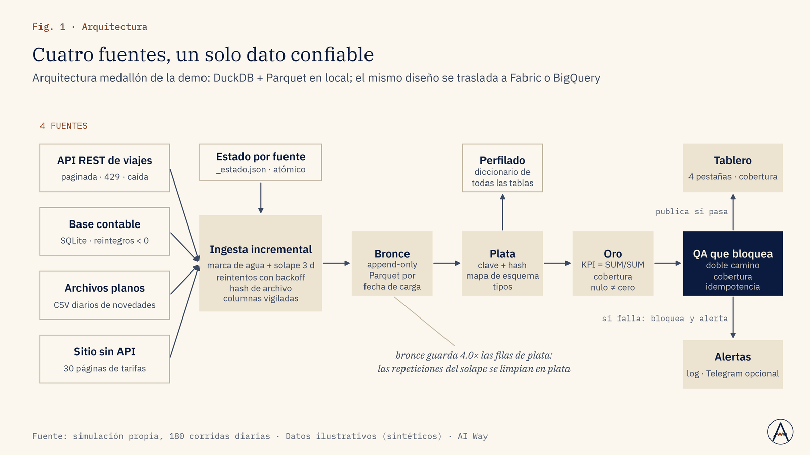
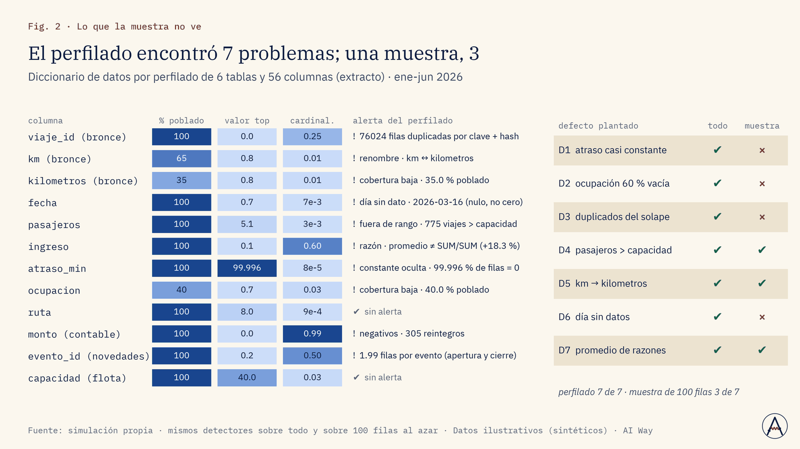
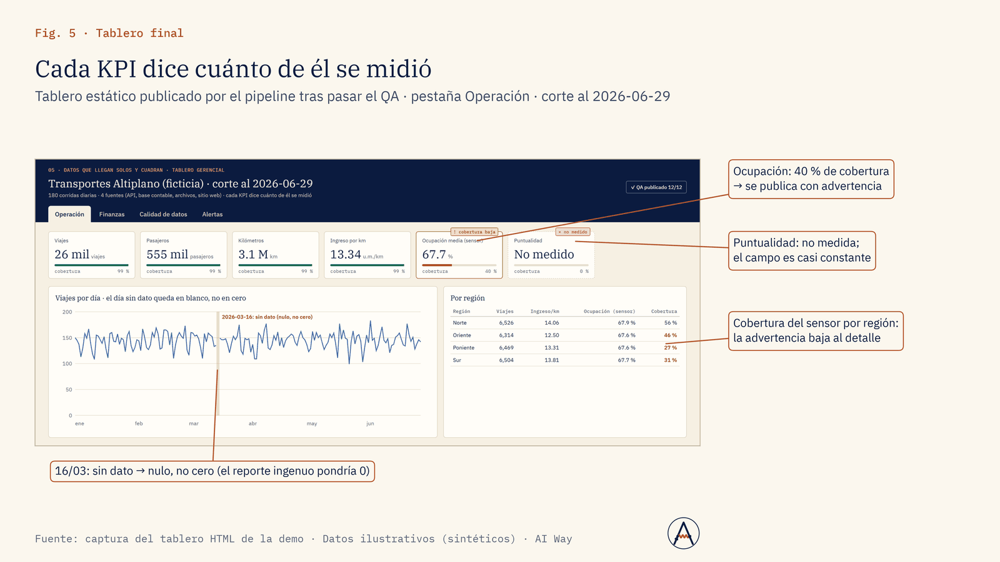

Ventas e ingresos
¿Cuánto vendimos ayer por región, sin esperar al lunes?
Ingesta incremental diaria de API, base y archivos a bronce, plata y oro, con KPI listos para el tablero.
Corregir el rumbo comercial con los datos del día anterior.
Servicio · Nº 05
Pipelines que traen tus datos de APIs, bases, archivos y sitios web cada día, sin duplicar, con alertas cuando algo cambia y con cifras que se pueden auditar en el tablero.
01 · El problema
Los datos de la empresa viven en APIs de proveedores, bases Oracle o SQL Server, hojas de cálculo y sitios web sin API. Alguien los copia a mano, los cruces se rompen y el tablero muestra una cifra que nadie puede reproducir.
Cuando el dato llega tarde se pierde la ventana para actuar. Hace falta ingesta automática, incremental y reanudable, un modelo de datos documentado y un QA que impida publicar cifras falsas.
02 · Enfoque
03 · Resultados de la demo
Cuatro fuentes simuladas y caóticas (API paginada que responde 429, base contable, CSV diarios y un sitio sin API) se ingieren durante 180 corridas diarias con 7 defectos plantados. Capas medallón en DuckDB/Parquet, diccionario por perfilado, QA que bloquea y tablero con cobertura por KPI.
Contar filas duplicaba los accidentes; dividir agregados corrige el ingreso por km
Fuente: simulación propia, 180 corridas diarias · Datos ilustrativos (sintéticos) · AI Way
180 corridas, 0 registros perdidos
Fuente: simulación propia, 180 corridas diarias · Datos ilustrativos (sintéticos) · AI Way



04 · Límites declarados
05 · Aplicaciones de negocio
Ejemplos de decisiones que este servicio ayuda a tomar; el alcance se define en el diagnóstico.
Ventas e ingresos
Ingesta incremental diaria de API, base y archivos a bronce, plata y oro, con KPI listos para el tablero.
Corregir el rumbo comercial con los datos del día anterior.
Marketing
Unificamos las fuentes en un modelo con definiciones exactas: cocientes de agregados, no promedios de razones.
Mover inversión entre canales con una sola versión de la cifra.
Operación y costos
Automatizamos la ingesta con marca de agua y solape; se reanuda sola y correr dos veces da lo mismo.
Liberar al equipo del copiado para que analice y decida.
Riesgo y reputación
QA de doble camino, cobertura por KPI y «ausencia no es cero»: si una cifra no cuadra, no se publica.
Presentar a la dirección solo cifras verificadas.
Dirección y estrategia
Perfilamos todas las filas de todas las tablas: tipos, % poblado, rangos, columnas vacías o constantes.
Priorizar qué fuentes arreglar antes de construir tableros.
Precios y regulación
Scrapers vigilan sitios sin API y alertan por Telegram, Google Chat o correo cuando cambia una tarifa o norma.
Reaccionar a un cambio de tarifa o de norma el mismo día.
06 · Paquetes
Auditoría de datos: diccionario por perfilado de hasta 30 tablas, mapa de fuentes y lista priorizada de problemas de calidad; o una fuente automatizada con alertas.
Duración típica: 1 a 2 semanas
Hasta 6 fuentes con ingesta incremental, capas bronce-plata-oro, QA automático, un tablero gerencial y alertas.
Duración típica: 4 a 6 semanas
Plataforma de BI completa (varios tableros, modelo semántico de cientos de medidas, seguridad por roles), monitoreo de 20+ fuentes web, runbook y soporte.
Duración típica: 8 a 12 semanas + soporte
Sin precios publicados: cada propuesta se cotiza tras un diagnóstico de alcance.
07 · Preguntas frecuentes
Sí: Fabric/Azure, GCP o local; también sin nube, con DuckDB.
El pipeline detecta el cambio de esquema o la caída y alerta; el runbook dice cómo corregir.
Se usan fuentes públicas y se revisan los términos de servicio; preferimos la API oficial cuando existe.
Se entrega documentado para su equipo o se ofrece la operación.
08 · Descarga
Presentación de la demo (PDF, 1.6 MB). El caso completo: problema, método, resultados contra criterio y límites declarados.
Descargar PDFSiguiente paso
En una llamada de 30 minutos revisamos si se puede, cómo lo mediríamos y qué no te podemos prometer.
Otros servicios